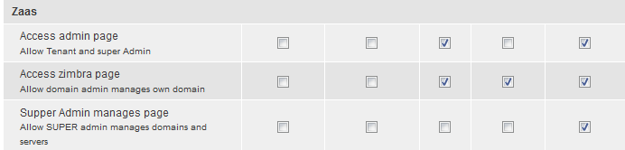

ZaaS configurations
Ok, now we will set new setting.
Roles: From Management menu, choose Administration -> Modules -> Click Permissions -> Click Roles
Add 3 roles: Tenant, Domain manager, SuperAdmin. You MUST create Extractly name. You should copy paste!
Ok, now Click Permissions ( belower link), find Zaas setting division.
You will see 3 permissions: Access admin page, Access zimbra page, Supper Admin manages page:
- Access admin page: Allow Tenant and super Admin
- Access zimbra page: Allow domain admin manages own domain
- Supper Admin manages page: Allow SUPER admin manages domains and servers
Choose the same in this picture and click Save permissions

Congratulation, you have done all settings. Now we keep going.
Zimbra server
Simply, Config phpchecker file ( edit phpchecher.php file) and set some settings:
$urli = 'hlp007.com'; // URL of Drupal Server
$url = '/dp/'; // path / drupal/ in / Drupal Server
$secret = '123456az'; // Key pass when connect to Drupal server
$domain = 'zaasmhst.com,'; // Domain of this server
$server = '119.15.161.24'; // Name of this server
In this tool, I use HttpClient as browser to connect to Drupal server.
You must install PHP to compile this code. If You want to test via browser,you must install Web server (Apache) with PHP support, and copy to htdocs
To check, run phpchecker in browser, If you see "No command. Return", It's mean server run well.
If You want to test via browser, the Webserver, in this server I use Apache, under ROOT permission, because We need to call function belong to zimbra user. Open the httpd.conf file and find the User, Group lines to edit:
User root
Group root
Schedule
Ok, now set cron job for phpchecker.
edit crontab
crontab -e
*/2 * * * * root php /var/www/html/phpchecker.php
*/2 : Time in minute. */2 = every minute.
root : user run this cript (because We need to call function belong to zimbra user).
php : command execute.
/var/www/html/phpchecker.php: address to phpchecker file